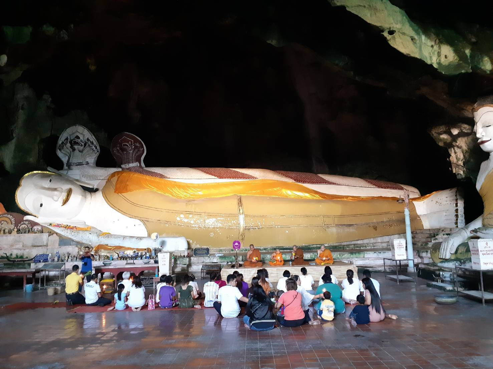

ประเพณีเวียนรอบพ่อท่านบรรทม

ประเพณีเวียนเทียนรอบพระพุทธไสยาสน์ ที่วัดคูหาภิมุข ต.หน้าถ้ำ อ.เมือง จ.ยะลา พุทธศาสนิกชน ซึ่งมีทั้งชาวบ้านในพื้นที่ คนเฒ่าคนแก่ จนไปถึงเด็ก จำนวนประมาณ 30 คน ได้ร่วมใจกันเดินทางไปกราบไหว้พระนอนศรีวิชัย หรือพระพุทธไสยาสน์ อายุ 1,200 ปี ซึ่งเป็นพระคู่บ้านคู่เมืองของจังหวัดยะลา มาตั้งแต่อดีตกาล ก่อนที่จะทำพิธีเวียนเทียนรอบองค์พระนอนศรีวิชัย เนื่องในวันวิสาขบูชาในวันนี้
โดยนายชัชพงษ์ เพชรกล้า ประธานศูนย์วัฒนธรรมเฉลิมราช และประธานสภาวัฒนธรรมตำบลหน้าถ้ำ อ.เมือง จ.ยะลา ซึ่งเป็นผู้นำชุมชนในตำบลหน้าถ้ำ และนำพุทธศาสนิกชนในหมู่บ้านมาร่วมพิธีสวดมนต์ และเวียนเทียนรอบองค์พระนอนศรีวิชัย ของวัดถ้ำคูหาภิมุข ได้เปิดเผยว่า องค์พระพุทธไสยาสน์ หรือที่รู้จักกันในนามว่า พระนอนศรีวิชัย ถือเป็นพระพุทธรูปที่เก่าแก่คู้บ้านคู่เมืองจังหวัดยะลา มาตั้งแต่อดีตกาล จวบจนวันนี้มีอายุราว 1,200 ปี จึงได้นำพุทธศาสนิกชนในพื้นที่ มาร่วมทำพิธีสวดมนต์หน้าองค์พระนอน ก่อนที่จะประกอบพิธีเวียนเทียนรอบองค์พระนอน เพื่อเป็นการสืบสานวัฒนธรรมประเพณีเนื่องในวันวิสาขบูชา ซึ่งถือปฏิบัติกันมาช้านาน แม้ว่าสถานการณ์ในพื้นที่ปัจจุบัน จะส่งผลให้ประชาชน หรือพุทธศาสนิกชน ไม่กล้าที่จะการเดินทางมาร่วมพิธีเวียนเทียนเหมือนแต่ก่อน แต่คนในชุมชนเองก็พยายามที่จะสืบสานวัฒนธรรมประเพณีที่ดีงามของชุมชนไว้ไม่ให้เสื่อมคลาย
ทั้งนี้ วัดคูหาภิมุข ตั้งอยู่ที่ ต.หน้าถ้ำ อ.เมือง จ.ยะลา ห่างจากตัวจังหวัดประมาณ 7 กิโลเมตร เป็นวัดเก่าแก่ที่ถูกสร้างขึ้น มีพระพุทธรูปภายในถ้ำจำนวนมาก หนึ่งในนั้นคือ พระพุทธไสยาสน์ ที่สร้างขึ้นมาเป็นพระคู่บ้านคู่เมืองตั้งแต่พุทธศักราช 1,300 โดยมีประวัติความเป็นมาว่าถูกสร้างขึ้นในสมัยศรีวิชัย มียักษ์อยู่ปากทางเข้าถ้ำเรียกว่า “พ่อเจ้าเขา” ยืนตระง่านถือไม้ตะบองสูงนับสิบเมตร เฝ้าอยู่ปากทางเข้าถ้ำ
อย่างไรก็ตาม พุทธศาสนิกชนใน ต.หน้าถ้ำ อ.เมืองยะลา ต่างยังคงภูมิใจในอัตลักษณ์ของแต่ละศาสนาในพื้นที่ และพร้อมที่จะทะนุบำรุงศาสนาให้อยู่คู่กับพื้นที่ไปตลอด โดยในปีต่อไป จะมีการประชาสัมพันธ์ และเชิญชวนให้พุทธศาสนิกชนมาร่วมพิธีสวดมนต์ และเวียนเทียนรอบองค์พระนอนศรีวิชัย เพื่อให้เกิดความศรัทธา และธำรงไว้ซึ่งพระพุทธศาสนาให้มากขึ้น
ย้อนกลับ